☰
 KONZEPT
KONZEPT
 AKTUELLES
AKTUELLES
 ÜBER UNS
ÜBER UNS
 UNTERSTÜTZER*INNEN
UNTERSTÜTZER*INNEN
☰
Konzept
Alle reden von Nachhaltigkeit. Medien berichten davon und junge Menschen gehen dafür auf die Straße. Unternehmen suchen Innovationen und Politiker*innen beziehen Stellung. Es gibt viele Initiativen, die mit an einer sozialen, ökologischen und wirtschaftlich nachhaltigen Welt arbeiten. All das passiert auch in Kiel. Aber was genau? Wer macht das? Und wo ist Potenzial für mehr? Um die Auseinandersetzung mit einer nachhaltigen Zukunft in Kiel konstruktiv voranzubringen, findet das Kiel Kann Mehr Zukunftsfestival statt – mit einem für Kiel und darüber hinaus neuen Veranstaltungskonzept. Wir bringen einen Tag lang Bürger*innen mit Expert*innen und Entscheidungsträger*innen aus Politik, Wirtschaft und Forschung zusammen, um Impulse für eine ökologisch, sozial und wirtschaftlich nachhaltige Zukunft unserer Stadt zu setzen. Mitgestalten, Stellung beziehen, sichtbar machen. Kiel Kann Mehr!
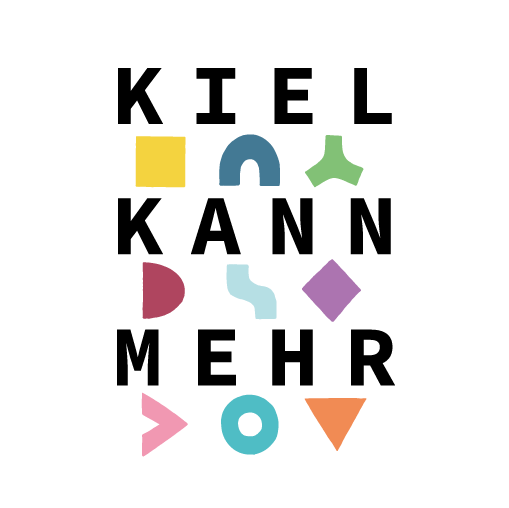
Aktuelles
An dieser Stelle veröffentlichen wir Neuigkeiten rund um das Kiel Kann Mehr Zukunftsfestival!Über uns
Das Kiel Kann Mehr Zukunftsfestival wird organisiert von Studierenden der School of Sustainability an der Christian-Albrechts-Universität zu Kiel.Im Foto von links oben nach rechts unten: Hauke Dentzin, Mareike Chalkley, Sabrina Grape, Lisa Vagts, Maura Rafelt, Jonas Mayer
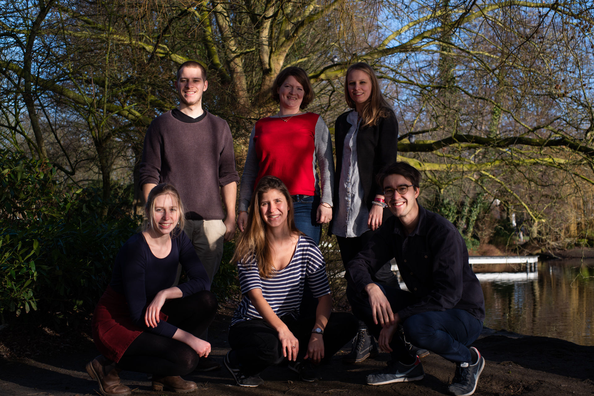
Sie erreichen das Team per E-Mail an info@kielkannmehr.de oder über die Facebookseite.
Unterstützer*innen
Das Kiel Kann Mehr Zukunftsfestival wird von diversen Organisationen, Unternehmen und Behörden unterstützt. Das passiert durch finanzielle Förderung, Hilfe in der Veranstaltungsplanung, die Bereitstellung von Standorten und durch Programmpunkte. Vielen Dank dafür!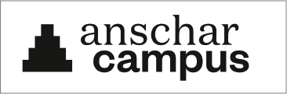
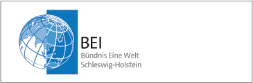
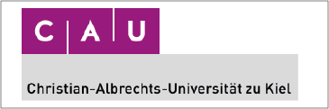
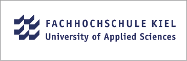
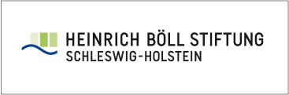
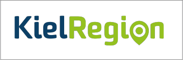
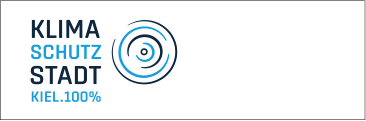
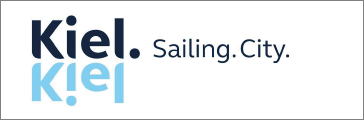
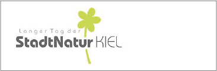
KIEL KANN MEHR
ZUKUNFTSFESTIVAL
ZUKUNFTSFESTIVAL
Impressum und Datenschutz © 2020 / Initiative Kiel Kann Mehr powered by  und
und 
und